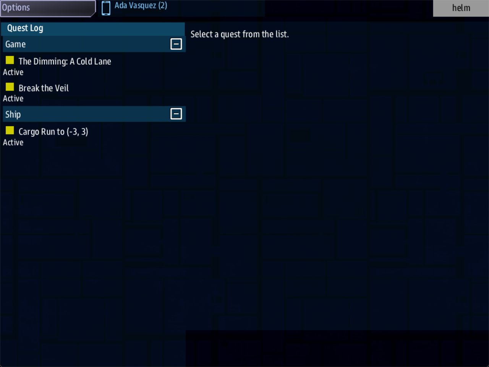

Class 5, Lecture 1 - What Open Universe is¶
What you will have at the end¶
A picture of what an Open Universe mission is. You will have started one, stood in its first system, and read the one file that made the whole of it. And you will have chosen what kind of game your own universe is going to be.

Helm's Quest Log in The Silver Reach: The Dimming, Break the Veil and the cargo run.You write nothing in this lecture. You play a little, and you read.
The video¶
About 5 minutes. Subtitles are available in the player.
Before you start¶
- You have finished Class 1. You can open a folder in VS Code and start the game with
sbs run. - A command prompt open in
C:\Cosmos\data\missions. - The game closed.
Words for this lecture:
| Word | Meaning |
|---|---|
| Open Universe | A mission that is not one map but a whole galaxy of them. It is also the name of the machinery under it, which your own mission will borrow from Lecture 2 on |
| Universe | One world that machinery can run: its sides, its places, its work and its story. A universe is one .amd file |
| System | One place in a universe. The crew is in one system at a time |
| Jump | Going from one system to another |
| Seed | One number the game makes a galaxy from. The same seed always makes the same galaxy |
| Mode | What kind of game a universe is: a story, a campaign, an open world, or a war |
Stop 1 - Find Open Universe¶
Open Universe is a mission, like Legendary Missions. Look for its folder:
If the answer lists files, among them silver_reach.amd and story.mast, you have it.
Go to Stop 2.
If the answer is File Not Found, fetch it:
Type the -b v1.4.0_dev. Without it, sbs fetch gets an older Open Universe that has no
Silver Reach in it.
This is the other job of sbs fetch, the one Class 1 told you to keep away from your own
mission: it downloads a whole mission and puts it in a folder of that name. That is what
you want here. Never point it at a folder you are writing in.
Stop 2 - Start it, and choose a universe¶
Start the game with a Helm and a Comms console. Leave map=0 off this time, because you
want the start screen:
On the server's start screen, the mission is called Open Universe. Among its options is a list named Universe. It holds four:
| Universe | What it is |
|---|---|
| Default | The big one: six sides, an admiral's game of fleets and worlds, and most of what the machinery can do |
| The Silver Reach | The writer's example. Two sides, three jobs, a story in three steps, and a way to win. This is the one to read |
| The Fading Signal | A short story for one ship |
| Skirmish - The Broken Accord | Admirals against each other |
Choose The Silver Reach. Leave the other options as they are, and press Start Mission. Then, in the two console windows, take Helm and Comms, as in Class 1.
One option to notice before you press: Start, which reads Continue. An Open Universe game is kept between sessions. Continue picks up the kept game, and when there is none, it begins a new one.
Stop 3 - The first system¶
You are in the system every new game starts in. Its address is 0, 0, and the game
calls it Home Port.
- A card names the place: Home Port.
- There is one station, called Starbase. It belongs to the crew's own navy.
- In the
commswindow, select the station. Among its buttons are Market, Accept Cargo Run and Transport a passenger, with two numbers after it. Press Accept Cargo Run. A cargo run is a job: carry freight to another system, and be paid on arrival. - In the
helmwindow, press the handheld icon in the top bar, then Quests. The Quest Log holds three things:
| In the Quest Log | What it is |
|---|---|
| The Dimming: A Cold Lane | The first step of this universe's story. It asks the crew to go to the system at -4, 2 |
| Break the Veil | The way to win: destroy fifteen ships of the side called the Red Veil |
| Cargo Run, with two numbers | The job you just took. The numbers are the system it goes to |
And here the tour stops, today. Every one of those three sends the crew to another system, and in this mission the ship cannot leave. Going somewhere is done with an Engage button in Helm's Quest Log, and the Open Universe mission has that button switched off. With a job selected, Helm's Quest Log says only: "Manage quests at the Admiral or Comms console."
That is a fault in the mission as it is published, and not something you did. The mission you make in Lecture 2 has the button switched on, and you will be jumping between systems in your own universe in about an hour. The rest of The Silver Reach you will see on this page, and on the video.
Close the game.
Stop 4 - The file behind it¶
Everything you just saw that was particular to The Silver Reach came from one file. In
VS Code, open the OpenUniverse folder, and in it open silver_reach.amd. Do not change
it. Read down it with this table beside you.
The file is 364 lines. It is one record with a single hash, and under it ten chapters, each a heading with two hashes.
| Chapter | What is in it | Where you write your own |
|---|---|---|
# [The Silver Reach] |
The title page: a name, and three lines about the place | Lecture 2 |
## [Sides] |
Two factions. The Lantern Combine, traders, who talk. The Red Veil, pirates, who shoot first | Lectures 3 and 4 |
## [Jobs] |
Three kinds of work a side's station can offer: Convoy Escort, Veil Bounty, Quiet Cargo | Lecture 6 |
## [Narrative] |
The story, The Dimming, in three steps. Each step is a quest of the kind you wrote in Class 1 | Lecture 7 |
## [Goals] |
One quest, Break the Veil, with the line Win: true |
Lecture 7 |
## [Effects] |
How each side's ships look as they wind up to jump | Not in this class |
## [Regions] |
Two stretches of the map with their own sky and their own dangers | Lecture 5 |
## [Landmarks] |
Two places put on the map by hand: a dead colony ship and a station | Lecture 5 |
## [Captains] |
One named enemy, Mara Dusk, who remembers how the crew has treated her | Lecture 8 |
## [Lifeforms] |
Two people: a harbormaster on the radio, and a passenger who wants a ride | Lecture 9 |
## [Dialogue] |
What the Veil, Mara Dusk and the two people say, and what the crew can answer | Lecture 8, and Class 2 |
Now find the Lantern Combine, near the top:
### [The Lantern Combine](lantern)
---
Color: #ffcc44
Character: trader
Disposition: neutral
Home: -4, 2
Values: honest 40, generous 30, peaceful 20
Offers: escort, bounty
Flies: Arvonian
Jump Charge: lantern_charge
---
Convoy families who keep the freight lanes lit. Fair dealers with long
memories for a kept promise - and longer ones for a broken cargo contract.
You can read most of this already. It is a record: a heading with a name and a key, a
fence with one fact to a line, and text below it. Home: -4, 2 is a system, four to one
side of where the crew starts and two up. That is the system the story's first step
sends the crew to.
What the crew would find there. This was measured by a script that sent the game the same message the Engage button sends, in the game's stand-in. Nobody has flown it.
| In the file | In that system |
|---|---|
Home: -4, 2 on the Lantern Combine |
A station named The Lantern Combine, belonging to that side |
The landmark ### [Lighthouse Station], with At: -4, 2 |
A second station, Lighthouse Station. The arrival card names the system after it, and shows the first line of its text |
Offers: escort, bounty |
Both stations offer Convoy Escort, 260 credits, and Veil Bounty, 300 credits |
The person ### [Brother Calen], with Pickup: -4, 2 |
Both stations offer Transport Brother Calen, 500 credits, to the system at 5, -4 |
Then: reveal dimming_2 on the story's first step |
The first step is done, and the second, The Dimming: Ash on the Manifest, is in the Quest Log |
What is not in the file. There is no list of systems. Nobody wrote the stars, the empty systems, the nebulae, the stations nobody named, the raiders, or the crates of cargo drifting between them. The game makes those from the seed, one system at a time, as the crew arrives. Only the system the crew is in exists. The file says who lives in the galaxy and what happens there. The game supplies the galaxy.
That is the bargain of this class. You write people, places and events in a file like this one. You do not draw a map.
Stop 5 - What is kept¶
Two things outlive a session.
| What | Where it is | What it means |
|---|---|---|
| The seed | In the save file | The same galaxy is there next time. A system you left is the same system when you come back |
| What the crew changed | In the save file | Where the ship is, which systems it has seen, its jobs and its credits, the sides it has made peace with, and what each side thinks of it |
The save file for the game you just played is in C:\Cosmos\data\missions\common_data\saves,
and its name is universe_save_the_silver_reach_1.yaml. Open it in VS Code. It is short.
Find universe_seed, and find current_system, which holds 0 and 0.
A universe file can change between sessions and the save still works. That is how a writer runs a campaign: the crew plays an evening, the writer adds the next chapter, and on the next evening Continue carries on in a world that has grown.
Stop 6 - Choose your mode¶
A universe says what kind of game it is with one word, its mode. The Silver Reach does not say, so it gets the first one in this table.
| Mode | The game it makes | Who it is for |
|---|---|---|
sandbox |
An open world with no ending | A crew that wants to wander, trade and pick fights |
story |
One ship, and a story with an ending | One evening, or a few. The Fading Signal is one |
campaign |
One ship, and a long game over many sessions | A crew that meets every week |
skirmish |
Admirals with fleets against each other | Several crews, one evening |
war |
The same, longer and larger | Several crews, many evenings |
For a crew in one ship, story, campaign and sandbox play alike today. The word is
a promise to yourself about what you are writing. Lectures 14 and 15 are where the last
two come in.
Choose one for your own universe now. You will type it in Lecture 2.
Stop 7 - The class¶
| # | Lecture | You build |
|---|---|---|
| 1 | What Open Universe is | Nothing. You are here |
| 2 | Your universe file | A mission of your own with a title, a home port, and a game that can be continued |
| 3 | Sides, diplomacy and goods | Three factions, one of them an enemy, and the cargo of your world |
| 4 | Reputation | Sides that remember what the crew says and does |
| 5 | The map | Regions, landmarks, stations, and the dials that shape the galaxy |
| 6 | Jobs | Work that can be done again and again |
| 7 | Narrative and goals | A story, and a way to win |
| 8 | Captains and rivals | Named people on the other side |
| 9 | Organizing a big universe | Chapters in files of their own, and a website of your world |
| 10 | A boarding site on the map | A place the crew leaves the ship for |
| 11 | A ruin on the map | A place the ship flies into |
| 12 | Battles, part 1 | How many enemies, and where |
| 13 | Battles, part 2 | A battle that is waiting when the crew arrives |
| 14 | Admiral, part 1 | The game of fleets and worlds |
| 15 | Admiral, part 2 | An admiral beside a bridge crew |
| 16 | Capstone | One full session in your own world |
Lectures 10 to 16 are in preparation.
If something goes wrong¶
Only these rows were checked.
| What you see | Why | What to do |
|---|---|---|
| No Engage button in Helm's Quest Log | It is switched off in the Open Universe mission as published | Nothing. Stop 3 says so. Your own mission in Lecture 2 has it |
| The game starts in a system that is not Home Port | It continued a game kept from another day | To begin again, set Start to New Game on the start screen. It replaces the kept game and does not ask first |
| The Quest Log has The Long Truce in it, and not The Dimming | The Universe list was left on Default | Close the game, start again, and choose The Silver Reach |
Exercise¶
Two things, both on paper.
Read the file. With silver_reach.amd open, answer these. Each answer is one line of
the file.
- Which side shoots first, and which word says so?
- Where is the Red Veil's home?
- What does the third step of The Dimming pay?
- How many of the Veil's ships must be destroyed to win?
- What does Mara Dusk say to a captain she has decided to hate?
Plan yours. Write three sentences about the universe you are going to make:
- Who lives there. Two or three peoples, a line each.
- Who shoots first.
- What the crew is there to do.
And write down your mode. Keep the page. Lecture 2 turns the first of it into a file.
Checkpoint¶
You are done when all four are true:
- You have started Open Universe, chosen The Silver Reach, and stood in Home Port.
- You have found the story's first step in the Quest Log, and the record that made it in
silver_reach.amd. - You can say what a universe file holds, and what the game supplies.
- You have three sentences and a mode on paper.
Next¶
Lecture 2, "Your universe file", makes a mission of your own with one command, gives it a title and a home port, and takes it on its first jump.
Further reading¶
Nothing here is needed for Lecture 2.
- "The complete example" in the Open Universe writer's walkthrough: the whole of
silver_reach.amdon one page, with a note on what each part gives the crew. - "Reference - every label on one page", in the same documentation. It is the reference for this class. Do not read it yet.